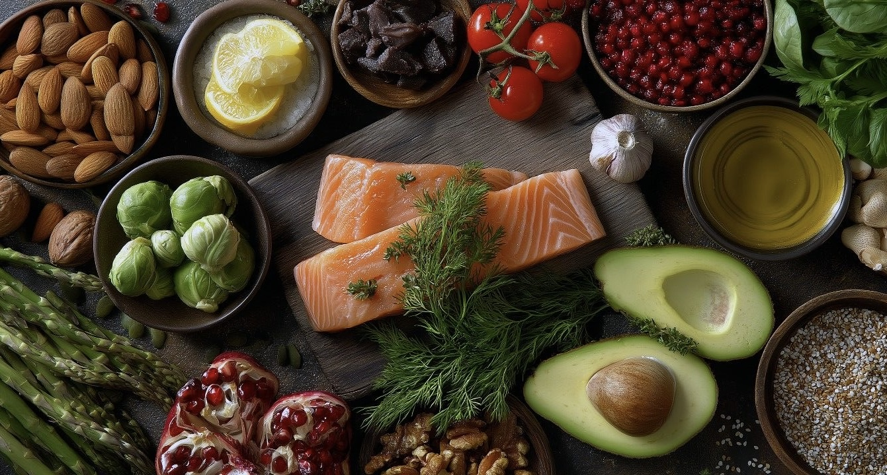

<!doctype html>
<html lang="en">
<head>
<meta charset="utf-8">
<meta name="viewport" content="width=device-width,initial-scale=1,viewport-fit=cover">
<title>Vitala</title>
<meta name="description" content="Vitala. Eat healthy. Save time.">
<meta name="theme-color" content="#fdfdfb">
<link rel="manifest" href="manifest.webmanifest">
<link rel="icon" href="icon-192.png">
<link rel="apple-touch-icon" href="apple-touch-icon.png">
<meta name="apple-mobile-web-app-title" content="Vitala">
<style>:root{color-scheme:light;padding:env(safe-area-inset-top,0px) 0 env(safe-area-inset-bottom,0px);background:#fdfdfb;height:100%}[hidden]{display:none!important}</style>
</head>
<body>
<style>
/* layout: one phone column; sketch's pill tabs on top, highlighter lime marks the active/primary things */
:root{--paper:#fdfdfb;--desk:#e9e8e3;--ink:#2d2d2b;--soft:#6d6d68;--line:#4a4a47;--lime:#d6ee5c;--wash:#eef7bd;--water:#17897a}
@font-face{font-family:Poppins;font-weight:400;font-display:swap;src:url(poppins-400.ttf) format('truetype')}
@font-face{font-family:Poppins;font-weight:500;font-display:swap;src:url(poppins-500.ttf) format('truetype')}

*{box-sizing:border-box;margin:0;padding:0}
html,body{height:100%}
body{background:var(--desk);color:var(--ink);font:400 15px/1.45 Poppins,system-ui,sans-serif}
#app{max-width:430px;margin:0 auto;height:100%;overflow-y:auto;background:var(--paper);padding-block:14px 32px;padding-left:max(18px,env(safe-area-inset-left,0px));padding-right:max(18px,env(safe-area-inset-right,0px))}
button,input{font:inherit;color:inherit}
button{background:none;border:1.5px solid var(--line);border-radius:999px;cursor:pointer;-webkit-tap-highlight-color:transparent}
button:active{transform:scale(.97)}
:focus-visible{outline:3px solid var(--water);outline-offset:2px}
svg.i{width:22px;height:22px;fill:none;stroke:currentColor;stroke-width:1.7;stroke-linecap:round;stroke-linejoin:round;flex:none}
header{display:flex;justify-content:space-between;align-items:center;margin-bottom:10px}
.logo{font-size:23px;font-weight:500}
.round{width:40px;height:40px;display:grid;place-items:center;flex:none}
nav{display:flex;flex-wrap:wrap;gap:8px;margin-bottom:18px}
nav button{padding:5px 15px;font-size:14px}
.on{background:var(--lime)}
h1{font-size:25px;font-weight:500;line-height:1.25}
h2{font-size:16px;font-weight:500}
.sub{color:var(--soft);font-size:13px;margin-bottom:14px}
.stack{display:flex;flex-direction:column;gap:11px}
.stack>*{flex-shrink:0}
.row{display:flex;justify-content:space-between;align-items:center;gap:10px}
.box{border:1.5px solid var(--line);border-radius:16px;padding:13px;min-width:0}
.cta{width:100%;padding:11px;background:var(--lime);font-weight:500;display:flex;justify-content:center;align-items:center;gap:9px}
.link{border:0;font-size:13px;color:var(--soft);text-decoration:underline;padding:4px}
.plain{border:0;border-radius:6px;padding:4px 0;display:flex;align-items:center;gap:9px;text-align:left}
.card{width:100%;border-radius:15px;text-align:left;overflow:hidden;display:block}
.card .top{padding:10px 14px;display:flex;justify-content:space-between;align-items:center;gap:10px}
.card b{font-weight:500;display:block}
.card small{color:var(--soft);display:block}
.macro{background:var(--wash);border-top:1.5px solid var(--line);padding:5px 14px;font-size:12px;display:flex;gap:14px;flex-wrap:wrap}
.hero{width:100%;height:auto;display:block;border:1.5px solid var(--line);border-radius:18px}
.search{display:flex;align-items:center;gap:8px;border:1.5px solid var(--line);border-radius:999px;padding:7px 14px}
.search input{border:0;background:none;flex:1;min-width:0;outline:0}
.search:focus-within{outline:3px solid var(--water)}
.chips{display:grid;grid-template-columns:repeat(3,minmax(0,1fr));gap:10px;margin-top:13px}
.chips button{padding:9px 2px;font-size:13px;border-radius:12px;min-width:0;overflow-wrap:anywhere}
.cat{margin-top:14px;font-size:14px}
li.ing{gap:12px}.hint{display:block;color:var(--soft);padding-left:18px}.mark{text-align:right;font-size:13px}
.thumb{width:66px;height:66px;object-fit:cover;border-radius:11px;border:1.5px solid var(--line);flex:none}
.card .top .info{flex:1;min-width:0}
.photo{width:100%;aspect-ratio:12/6;object-fit:cover;border-radius:14px;border:1.5px solid var(--line);display:block}
select{font:inherit;color:inherit;background:none;border:0;text-align:right}
.field input,.field select{min-height:26px}
#chips{max-height:42vh;overflow-y:auto;padding:2px 4px 2px 2px;margin-top:6px}
img.hero{aspect-ratio:12/5;object-fit:cover}
label.cta{border:1.5px solid var(--line);border-radius:999px;cursor:pointer;background:none}
.finder{aspect-ratio:3/4;max-height:56vh;width:100%;border:7px solid var(--lime);outline:1.5px solid var(--line);border-radius:20px;display:flex;flex-direction:column;align-items:center;justify-content:center;gap:10px;text-align:center;padding:14px;position:relative;overflow:hidden}
.finder video,.finder img{position:absolute;inset:0;width:100%;height:100%;object-fit:cover}
.title-card{background:var(--wash);text-align:center}
.facts{display:grid;grid-template-columns:repeat(4,minmax(0,1fr));gap:8px}
.facts div{border:1.5px solid var(--line);border-radius:11px;background:var(--wash);text-align:center;padding:7px 2px;font-size:11px}
.facts b{display:block;font-size:15px;font-weight:500;font-variant-numeric:tabular-nums}
ul{list-style:none}
li.ing{display:flex;justify-content:space-between;padding:3px 0}
ol{padding-left:20px;font-size:14px}
.meal{background:var(--wash)}
.meal button{padding:4px 12px;background:var(--paper);font-size:13px;flex:none}
.days{display:flex;flex-wrap:wrap;gap:7px}
.days button{padding:3px 12px;font-size:13px}
.center{text-align:center}
.big{font-size:34px;font-weight:500;font-variant-numeric:tabular-nums}
.bar{height:15px;border:1.5px solid var(--line);border-radius:99px;overflow:hidden;margin:8px 0}
.bar i{display:block;height:100%;background:var(--water);transition:width .35s}
.three{display:grid;grid-template-columns:repeat(3,1fr);gap:9px;margin-top:12px}
.three button{background:var(--lime);padding:8px 0;font-weight:500}
.switch{width:96px;height:32px;position:relative;overflow:hidden;margin:10px auto 0;display:block}
.switch i{position:absolute;top:0;bottom:0;left:0;width:52%;background:var(--line);opacity:.18;border-radius:99px;transition:.25s}
.switch[aria-checked=true] i{left:48%;background:var(--lime);opacity:1}
.field{display:flex;justify-content:space-between;align-items:center;gap:12px;border-bottom:1.5px solid var(--line);padding:9px 0}
.field input{border:0;background:none;text-align:right;min-width:0;flex:1}
.sheet{position:fixed;inset:0;background:#0006;display:flex;align-items:flex-end;justify-content:center;z-index:5}
.sheet>div{background:var(--paper);width:100%;max-width:430px;max-height:80%;overflow:auto;border-radius:22px 22px 0 0;padding:18px 18px calc(18px + env(safe-area-inset-bottom,0px))}
#toast{position:fixed;left:50%;bottom:calc(22px + env(safe-area-inset-bottom,0px));transform:translateX(-50%);background:var(--ink);color:#fff;padding:9px 18px;border-radius:14px;font-size:13px;width:max-content;max-width:90%;text-align:center;z-index:9}
.motto{text-align:center;font-size:12px;border-top:2px solid var(--lime);padding-top:8px}
@media (prefers-reduced-motion:reduce){*{transition:none!important}}
</style>
<main id="app"></main>
<div id="sheet" class="sheet" hidden></div>
<div id="toast" role="status" hidden></div>
<script>
const CATS={
 'Popular':['Eggs','Tomatoes','Bread','Pasta','Chicken','Rice','Milk','Cheese','Flour','Cucumber','Potatoes','Spinach'],
 'Vegetables':['Carrots','Onion','Garlic','Bell pepper','Broccoli','Cauliflower','Cabbage','Zucchini','Eggplant','Mushrooms','Pumpkin','Corn','Peas','Lettuce','Beetroot','Herbs'],
 'Fruits':['Apples','Bananas','Oranges','Lemons','Strawberries','Pineapple','Pears','Grapes','Peaches','Berries','Avocado'],
 'Meat and fish':['Beef','Lamb','Turkey','Sausages','Minced meat','Salmon','Tuna','Shrimp'],
 'Dairy':['Yogurt','Butter','Sour cream','Cream','Cottage cheese','Kefir'],
 'Grains and beans':['Oats','Buckwheat','Noodles','Lentils','Beans','Chickpeas','Tortillas'],
 'Pantry':['Olive oil','Sunflower oil','Honey','Sugar','Salt','Nuts','Tomato paste','Soy sauce','Mayonnaise']
};
const R={
 toast:{n:'Tomato Egg Toast',t:10,k:285,p:15,c:29,f:11,d:"Golden toast with a fried egg and juicy fresh tomatoes. A quick breakfast when you only have a few minutes. The bread stays crunchy while the yolk makes it soft and rich.",i:['Eggs','Tomatoes','Bread'],
  s:['Prepare and wash all ingredients.','Toast the bread. Heat a pan with a little cooking oil.','Fry the egg and slice the tomatoes.','Put them on the toast, serve and enjoy!']},
 omelette:{n:'Spinach Omelette',t:15,k:340,p:22,c:6,f:22,d:"A fluffy omelette filled with soft spinach and melted cheese. It works well for breakfast or a light dinner and needs only one pan.",i:['Eggs','Spinach','Cheese'],
  s:['Wash the spinach and beat the eggs.','Heat a pan with a little oil and soften the spinach.','Pour in the eggs and add the cheese.','Fold when set, serve and enjoy!']},
 pasta:{n:'Creamy Tomato Pasta',t:20,k:420,p:14,c:58,f:14,d:"Warm pasta coated in a mild, creamy tomato sauce with cheese. A cosy lunch or dinner made from simple things in your kitchen.",i:['Pasta','Tomatoes','Milk','Cheese'],
  s:['Boil the pasta in salted water.','Cook chopped tomatoes in a pan until soft.','Stir in milk and cheese.','Mix with the pasta, serve and enjoy!']},
 bowl:{n:'Chicken Rice Bowl',t:25,k:480,p:35,c:55,f:12,d:"Fluffy rice topped with pan-cooked chicken and cool, crunchy cucumber. A filling bowl that is easy to pack for school or work.",i:['Chicken','Rice','Cucumber'],
  s:['Cook the rice.','Cut the chicken and cook it fully in a pan.','Slice the cucumber.','Put everything in a bowl, serve and enjoy!']},
 salad:{n:"Fresh Veggie Salad",t:10,k:190,p:7,c:12,f:13,d:"Fresh tomatoes and cucumber with cheese and a little olive oil. Light, crunchy and ready without any cooking.",i:["Tomatoes", "Cucumber", "Cheese", "Olive oil"],
  s:["Wash the vegetables.", "Chop the tomatoes and cucumber.", "Add the cheese and olive oil.", "Mix, serve and enjoy!"]},
 pancakes:{n:"Banana Oat Pancakes",t:20,k:330,p:13,c:48,f:9,d:"Small soft pancakes sweetened by ripe banana, with oats for a hearty bite. A nice weekend breakfast without added sugar.",i:["Bananas", "Oats", "Eggs", "Milk"],
  s:["Mash the banana.", "Mix it with oats, egg and milk.", "Fry small pancakes on both sides.", "Serve and enjoy!"]},
 skillet:{n:"Potato Mushroom Skillet",t:30,k:310,p:7,c:42,f:13,d:"Potatoes browned in a pan with mushrooms and onion. A simple, warming dish that works on its own or as a side.",i:["Potatoes", "Mushrooms", "Onion", "Sunflower oil"],
  s:["Wash and slice everything.", "Fry the potatoes in oil until almost soft.", "Add onion and mushrooms and cook through.", "Serve and enjoy!"]},
 friedrice:{n:"Veggie Fried Rice",t:20,k:390,p:12,c:62,f:10,d:"Rice tossed with egg, carrots, peas and soy sauce. A great way to use rice left from yesterday. Cool and refrigerate leftover rice soon after cooking.",i:["Rice", "Eggs", "Carrots", "Peas", "Soy sauce"],
  s:["Cook the rice and let it cool a little.", "Fry the carrots and peas.", "Push aside and scramble the egg.", "Add rice and soy sauce, stir and enjoy!"]},
 broccoli:{n:"Chicken and Broccoli",t:25,k:360,p:38,c:10,f:18,d:"Tender chicken cooked with broccoli and garlic in olive oil. A simple dinner with plenty of protein.",i:["Chicken", "Broccoli", "Garlic", "Olive oil"],
  s:["Cut the chicken and broccoli.", "Cook the chicken fully in oil.", "Add broccoli and garlic and cook until tender.", "Serve and enjoy!"]},
 sandwich:{n:"Tuna Sandwich",t:10,k:320,p:22,c:30,f:12,d:"Tuna mixed with a little mayonnaise and layered with crisp cucumber. Ready in ten minutes and easy to take with you.",i:["Bread", "Tuna", "Cucumber", "Mayonnaise"],
  s:["Drain the tuna.", "Mix it with mayonnaise.", "Slice the cucumber.", "Fill the bread and enjoy!"]},
 fruit:{n:"Yogurt Fruit Bowl",t:5,k:230,p:9,c:40,f:4,d:"Cool yogurt with banana, strawberries and a drizzle of honey. A sweet breakfast or snack with no cooking.",i:["Yogurt", "Bananas", "Strawberries", "Honey"],
  s:["Wash the strawberries.", "Slice the fruit.", "Spoon yogurt into a bowl.", "Add fruit and honey and enjoy!"]},
 soup:{n:"Beef Vegetable Soup",t:60,k:340,p:26,c:28,f:13,d:"Slowly simmered beef with potatoes, carrots and onion. A warm, homely soup that is even better the next day.",i:["Beef", "Potatoes", "Carrots", "Onion"],
  s:["Cut the beef and vegetables.", "Simmer the beef until nearly tender.", "Add the vegetables and cook until soft.", "Season, serve and enjoy!"]}
};

// ingredient spec: Name>Substitute|Substitute, trailing ? means it can be left out
const NEW=[["scrambled","Scrambled Eggs",8,220,14,2,17,"Eggs;Milk>Cream|Cream|Sour cream?;Butter>Sunflower oil;Herbs?","Soft, creamy eggs for a fast breakfast.",["Beat the eggs with milk.","Melt the butter in a pan.","Stir gently on low heat until the eggs are fully set.","Add herbs and serve."]],["shakshuka","Shakshuka",25,290,15,14,19,"Eggs;Tomatoes>Tomato paste;Onion?;Bell pepper?;Garlic?;Herbs?","Eggs gently cooked in a thick tomato sauce. Serve it straight from the pan.",["Fry the onion and pepper.","Add tomatoes and garlic and simmer.","Make small wells and crack in the eggs.","Cover until the eggs are set."]],["frittata","Vegetable Frittata",25,270,17,9,19,"Eggs;Zucchini>Bell pepper|Broccoli|Spinach|Mushrooms;Onion?;Cheese>Cottage cheese|Sour cream","A thick oven or pan omelette full of vegetables.",["Chop and soften the vegetables.","Pour over the beaten eggs.","Add cheese on top.","Cover and cook until the centre is set."]],["frenchtoast","French Toast",15,320,12,40,12,"Bread;Eggs;Milk>Cream|Kefir|Yogurt;Sugar>Honey?;Butter>Sunflower oil;Berries>Bananas|Strawberries?","Sweet golden bread, crisp outside and soft inside.",["Whisk eggs, milk and sugar.","Dip the bread on both sides.","Fry in butter until golden and cooked through.","Top with fruit."]],["grilledcheese","Cheese Toastie",10,360,15,30,20,"Bread>Tortillas;Cheese;Butter>Mayonnaise|Sunflower oil;Tomatoes?","Crunchy bread with stretchy melted cheese.",["Butter the outside of the bread.","Fill with cheese and tomato.","Toast on low heat on both sides.","Cut and serve."]],["avotoast","Avocado Toast",8,300,8,30,17,"Bread;Avocado;Lemons?;Eggs?;Tomatoes?","Mashed avocado on crisp toast.",["Toast the bread.","Mash the avocado with lemon.","Spread it on the toast.","Add egg or tomato on top."]],["oatmeal","Banana Porridge",10,310,10,54,7,"Oats;Milk>Kefir|Yogurt?;Bananas>Apples|Pears|Berries|Strawberries|Peaches;Honey>Sugar?;Nuts?","Warm oats with fruit for a calm morning.",["Cook the oats in milk or water.","Slice the fruit.","Add it on top.","Sweeten if you like."]],["overnight","Overnight Oats",5,290,11,45,8,"Oats;Yogurt>Kefir|Milk;Berries>Strawberries|Bananas|Apples|Peaches;Honey?;Nuts?","Mix in the evening and eat in the morning.",["Put oats and yogurt in a jar.","Stir well.","Leave in the fridge overnight.","Add fruit and serve."]],["cottagebowl","Cottage Cheese Bowl",5,240,22,22,7,"Cottage cheese>Yogurt;Berries>Bananas|Apples|Peaches|Strawberries|Pears|Grapes;Honey?;Nuts?","A protein-rich bowl with fresh fruit.",["Spoon cottage cheese into a bowl.","Cut the fruit.","Add it on top.","Drizzle with honey."]],["syrniki","Cottage Cheese Pancakes",25,340,22,32,13,"Cottage cheese;Eggs>Bananas;Flour>Oats;Sugar>Honey?;Sour cream>Yogurt?","Soft little pancakes, lovely with sour cream.",["Mix cottage cheese, egg, flour and sugar.","Shape small patties.","Fry on low heat on both sides until cooked through.","Serve warm."]],["crepes","Thin Pancakes",30,330,11,42,13,"Flour;Milk>Kefir;Eggs;Sugar>Honey?;Butter>Sunflower oil","Thin, soft pancakes you can fill with anything.",["Whisk everything into a smooth thin batter.","Heat a lightly oiled pan.","Cook a thin layer on both sides.","Fill and roll."]],["smoothie","Fruit Smoothie",5,210,7,40,3,"Bananas;Milk>Kefir|Yogurt;Strawberries>Berries|Peaches|Pineapple|Oranges?;Honey?","A cold drink made in one minute.",["Wash and cut the fruit.","Put everything in a blender.","Blend until smooth.","Pour and enjoy."]],["applebake","Baked Apples",30,180,3,34,4,"Apples>Pears;Honey>Sugar;Nuts?;Cottage cheese?","A warm and simple dessert.",["Remove the cores.","Fill with nuts or cottage cheese.","Add honey.","Bake at 180°C until soft."]],["fruitsalad","Fruit Salad",10,150,2,36,1,"Apples>Pears;Bananas;Oranges>Peaches|Pineapple|Grapes;Yogurt?;Honey?","Colourful fruit in one bowl.",["Wash the fruit.","Cut it into pieces.","Mix in a bowl.","Add yogurt or honey."]],["greek","Greek-style Salad",10,240,8,11,19,"Tomatoes;Cucumber;Cheese;Bell pepper?;Onion?;Olive oil>Sunflower oil","Juicy vegetables with salty cheese.",["Cut the vegetables into big pieces.","Add cubes of cheese.","Dress with oil.","Mix gently."]],["cabbagesalad","Cabbage Carrot Slaw",10,130,2,14,8,"Cabbage;Carrots>Apples;Lemons?;Herbs?;Sunflower oil","A crunchy and cheap side salad.",["Shred the cabbage finely.","Grate the carrot.","Add salt, lemon and oil.","Squeeze lightly and mix."]],["beetsalad","Beetroot Cheese Salad",15,220,8,18,13,"Beetroot;Cheese>Cottage cheese;Nuts?;Garlic?;Sour cream>Mayonnaise|Yogurt","Sweet beetroot with creamy cheese. Use cooked beetroot.",["Grate or cube the cooked beetroot.","Add cheese and nuts.","Stir in the dressing.","Chill and serve."]],["caesar","Chicken Caesar Wrap",20,430,30,36,18,"Chicken>Turkey;Tortillas>Bread;Lettuce>Cabbage|Spinach;Cheese?;Mayonnaise>Yogurt|Sour cream","Chicken and crisp leaves wrapped up to go.",["Cook the chicken fully and slice it.","Wash the leaves.","Spread the sauce on the wrap.","Fill and roll tightly."]],["tunasalad","Tuna Egg Salad",15,280,27,5,17,"Tuna;Eggs;Cucumber>Lettuce|Tomatoes|Corn;Mayonnaise>Yogurt|Sour cream","Filling salad from simple things.",["Hard-boil the eggs and cool them.","Drain the tuna.","Chop everything.","Mix with the dressing."]],["chickpeasalad","Chickpea Salad",10,290,11,36,12,"Chickpeas>Beans;Tomatoes;Cucumber>Bell pepper;Onion?;Lemons?;Olive oil>Sunflower oil","A hearty salad without meat. Use cooked or canned chickpeas.",["Drain the chickpeas.","Chop the vegetables.","Add lemon and oil.","Mix and serve."]],["tomatopasta","Tomato Garlic Pasta",20,390,12,68,8,"Pasta>Noodles;Tomatoes>Tomato paste;Garlic>Onion;Cheese?;Herbs?","A classic quick dinner.",["Boil the pasta.","Fry the garlic gently.","Add tomatoes and simmer.","Toss with the pasta."]],["cheesepasta","Mac and Cheese",25,480,19,62,18,"Pasta>Noodles;Cheese;Milk>Cream;Butter?","Soft pasta in a cheese sauce.",["Boil the pasta.","Warm the milk with butter.","Melt in the cheese.","Stir in the pasta."]],["mushpasta","Mushroom Cream Pasta",25,460,14,58,19,"Pasta>Noodles;Mushrooms>Zucchini;Cream>Sour cream|Milk;Onion?;Garlic?;Cheese?","Creamy pasta with browned mushrooms.",["Boil the pasta.","Fry mushrooms and onion.","Add cream and simmer.","Mix with the pasta."]],["chickenpasta","Chicken Pasta",30,520,34,60,15,"Chicken>Turkey;Pasta>Noodles;Cream>Sour cream|Milk|Tomatoes;Garlic?;Spinach?","A full dinner in one bowl.",["Boil the pasta.","Cook the chicken until no pink remains.","Add the sauce ingredients and simmer.","Mix with the pasta."]],["bolognese","Meat Sauce Pasta",40,540,29,62,18,"Minced meat;Pasta>Noodles;Tomatoes>Tomato paste;Onion?;Carrots?;Garlic?","Rich meat sauce over pasta.",["Fry onion and carrot.","Add the meat and brown it fully.","Add tomatoes and simmer.","Serve over pasta."]],["stirnoodles","Vegetable Noodles",20,370,11,62,8,"Noodles>Pasta;Carrots>Bell pepper;Cabbage>Broccoli|Zucchini;Soy sauce;Eggs?;Garlic?","Quick fried noodles with crunchy vegetables.",["Boil the noodles.","Fry the vegetables on high heat.","Add noodles and soy sauce.","Toss and serve."]],["chickensoup","Chicken Noodle Soup",45,260,23,26,6,"Chicken>Turkey;Noodles>Pasta|Rice;Carrots?;Onion?;Potatoes?;Herbs?","A light, warming soup.",["Simmer the chicken until cooked through.","Add the vegetables.","Add noodles and cook until soft.","Season with herbs."]],["pumpkinsoup","Pumpkin Cream Soup",40,190,4,24,10,"Pumpkin>Carrots;Onion?;Cream>Milk|Sour cream;Garlic?","Smooth orange soup.",["Cube the pumpkin and onion.","Simmer in a little water until soft.","Blend until smooth.","Stir in cream."]],["tomsoup","Tomato Soup",30,150,4,20,6,"Tomatoes>Tomato paste;Onion>Carrots;Garlic?;Cream?;Bread?","Simple soup with bright tomato flavour.",["Fry the onion.","Add tomatoes and water.","Simmer and blend.","Serve with bread."]],["lentilsoup","Lentil Soup",40,270,16,44,4,"Lentils;Carrots;Onion;Tomatoes>Tomato paste?;Garlic?;Lemons?","Thick soup that keeps you full.",["Rinse the lentils.","Fry onion and carrot.","Add lentils and water.","Simmer until soft."]],["borsch","Borscht",75,230,12,24,10,"Beetroot;Cabbage;Potatoes;Beef>Chicken|Beans;Carrots?;Onion?;Tomato paste>Tomatoes;Sour cream>Yogurt?","Beetroot soup with a deep red colour.",["Simmer the beef or beans until tender.","Add potatoes and cabbage.","Fry beetroot, carrot, onion and tomato paste.","Combine, simmer and serve with sour cream."]],["mashed","Mashed Potatoes",30,240,5,36,9,"Potatoes;Milk>Cream|Sour cream;Butter>Olive oil","Smooth, buttery potatoes.",["Peel and boil the potatoes.","Drain well.","Mash with warm milk and butter.","Season and serve."]],["roastpotato","Roast Potatoes",45,250,4,38,9,"Potatoes;Garlic?;Herbs?;Sunflower oil","Crisp outside and soft inside.",["Heat the oven to 200°C.","Cut the potatoes.","Toss with oil and salt.","Roast until golden."]],["draniki","Potato Pancakes",30,290,8,38,12,"Potatoes;Eggs;Flour>Oats;Onion?;Sour cream>Yogurt?","Crispy grated potato pancakes.",["Grate and squeeze the potatoes.","Mix with egg and flour.","Fry spoonfuls on both sides until cooked through.","Serve with sour cream."]],["plov","Chicken Plov",60,520,28,66,16,"Rice;Chicken>Beef|Lamb;Carrots;Onion;Garlic?","Fragrant rice cooked with meat and carrots.",["Brown the meat.","Add onion and carrots.","Add rice and hot water.","Cover and cook until the rice and meat are done."]],["buckwheat","Buckwheat with Mushrooms",30,310,11,52,8,"Buckwheat>Rice;Mushrooms;Onion?;Butter>Sunflower oil","A cosy side or light dinner.",["Rinse and boil the buckwheat.","Fry mushrooms and onion.","Mix together.","Add butter."]],["ricepudding","Rice Porridge",35,300,8,55,6,"Rice;Milk;Sugar>Honey;Butter?;Berries?","Sweet creamy rice.",["Rinse the rice.","Simmer in water briefly.","Add milk and cook gently.","Sweeten and serve."]],["stuffedpepper","Stuffed Peppers",60,330,20,32,14,"Bell pepper>Zucchini;Minced meat;Rice>Buckwheat;Tomatoes>Tomato paste;Onion?","Vegetables filled with meat and rice.",["Mix meat, part-cooked rice and onion.","Fill the vegetables.","Add tomato and water to the pot.","Simmer until the meat is fully cooked."]],["cutlets","Meat Patties",35,340,24,14,21,"Minced meat;Eggs?;Onion?;Bread>Oats","Home-style juicy patties.",["Soak the bread.","Mix with meat, egg and onion.","Shape patties.","Fry until cooked through."]],["beefstew","Beef Stew",90,390,32,28,17,"Beef>Lamb;Potatoes;Carrots?;Onion;Tomato paste>Tomatoes?","Slow-cooked and tender.",["Brown the meat.","Add onion and water and simmer.","Add vegetables.","Cook until everything is soft."]],["sausagepan","Sausage Potato Pan",30,450,15,34,28,"Sausages;Potatoes;Onion?;Bell pepper?","A simple one-pan dinner.",["Fry the potatoes until nearly soft.","Add onion and pepper.","Add sliced sausages.","Cook until browned and hot through."]],["turkeyveg","Turkey Vegetable Pan",30,290,31,14,12,"Turkey>Chicken;Zucchini>Broccoli|Bell pepper|Cauliflower;Carrots?;Garlic?;Soy sauce?","Lean meat with colourful vegetables.",["Cut everything.","Cook the turkey fully.","Add the vegetables.","Cook until tender and season."]],["salmon","Baked Salmon",30,380,34,6,24,"Salmon;Lemons?;Broccoli>Cauliflower|Zucchini?;Garlic?","Tender fish with vegetables.",["Heat the oven to 200°C.","Put salmon and vegetables on a tray.","Add oil, salt and lemon.","Bake until the fish flakes easily."]],["shrimprice","Garlic Shrimp Rice",25,390,24,58,7,"Shrimp;Rice>Noodles;Garlic;Lemons?;Peas?","Quick seafood dinner.",["Cook the rice.","Fry the garlic.","Add shrimp and cook until pink all through.","Serve over rice with lemon."]],["fishtortilla","Tuna Tortilla",10,350,24,36,12,"Tortillas>Bread;Tuna>Chicken;Corn?;Lettuce?;Mayonnaise>Yogurt|Sour cream","A fast wrap for lunch.",["Drain or fully cook the filling.","Mix with the sauce.","Add vegetables.","Wrap tightly."]],["quesadilla","Cheese Quesadilla",15,420,19,38,22,"Tortillas;Cheese;Chicken?;Corn?;Bell pepper?","Crisp tortilla with melted filling. Use cooked chicken.",["Put cheese and fillings on a tortilla.","Cover with another or fold.","Toast on both sides.","Cut into pieces."]],["beanwrap","Bean Burrito",20,410,16,64,10,"Tortillas;Beans>Chickpeas;Rice?;Tomatoes?;Avocado?;Cheese?","A filling wrap without meat. Use cooked or canned beans.",["Warm and lightly mash the beans.","Chop the vegetables.","Fill the tortilla.","Roll and toast."]],["cauliflower","Cheesy Cauliflower Bake",40,270,16,12,18,"Cauliflower>Broccoli;Cheese;Eggs>Sour cream|Cream;Milk?","Soft vegetables under a golden top.",["Boil the florets for a few minutes.","Place in a baking dish.","Pour over egg, milk and cheese.","Bake until set and golden."]],["ratatouille","Vegetable Stew",45,160,4,22,7,"Eggplant>Zucchini;Tomatoes>Tomato paste;Bell pepper?;Onion;Garlic?;Herbs?","Summer vegetables cooked slowly.",["Cube the vegetables.","Fry the onion.","Add the rest.","Simmer until soft."]],["cabbagestew","Braised Cabbage",40,180,5,20,9,"Cabbage;Carrots?;Onion;Tomato paste>Tomatoes;Sausages?","Soft sweet cabbage.",["Shred the cabbage.","Fry onion and carrot.","Add cabbage and tomato.","Cover and simmer until soft."]]];
for(const [key,n,t,k,p,c,f,i,d,steps] of NEW)R[key]={n,t,k,p,c,f,i,d,s:steps};
const SPEC={"toast":"Eggs;Tomatoes;Bread>Tortillas","omelette":"Eggs;Spinach>Zucchini|Bell pepper|Mushrooms|Broccoli;Cheese>Cottage cheese|Sour cream","pasta":"Pasta>Noodles;Tomatoes>Tomato paste;Milk>Cream|Sour cream;Cheese?","bowl":"Chicken>Turkey;Rice>Buckwheat;Cucumber>Tomatoes|Bell pepper?","salad":"Tomatoes;Cucumber;Cheese>Cottage cheese?;Olive oil>Sunflower oil","pancakes":"Bananas>Apples;Oats>Flour;Eggs;Milk>Kefir|Yogurt","skillet":"Potatoes;Mushrooms>Zucchini;Onion?;Sunflower oil","friedrice":"Rice>Buckwheat;Eggs;Carrots?;Peas>Corn|Bell pepper?;Soy sauce?","broccoli":"Chicken>Turkey;Broccoli>Cauliflower|Zucchini;Garlic?;Olive oil>Sunflower oil","sandwich":"Bread>Tortillas;Tuna>Chicken;Cucumber>Lettuce|Tomatoes?;Mayonnaise>Yogurt|Sour cream","fruit":"Yogurt>Kefir|Cottage cheese;Bananas>Apples|Peaches;Strawberries>Berries|Grapes?;Honey?","soup":"Beef>Lamb|Chicken;Potatoes;Carrots?;Onion?"};
for(const [key,r] of Object.entries(R)){const parts=(SPEC[key]||r.i).split(';');r.alt={};r.opt=[];
 r.i=parts.map(x=>{const optional=x.endsWith('?'),[name,subs]=x.replace(/\?$/,'').split('>');if(subs)r.alt[name]=subs.split('|');if(optional)r.opt.push(name);return name})}
const BASIC=['Salt','Sunflower oil','Olive oil'];
function plan(r){const swap=[],skip=[],missing=[];let own=0;
 for(const x of r.i){if(BASIC.includes(x))continue;
  if(S.have.includes(x)){own++;continue}
  const sub=(r.alt[x]||[]).find(a=>(S.have.includes(a)||BASIC.includes(a))&&!r.i.includes(a));
  if(sub)swap.push([x,sub]);else if(r.opt.includes(x))skip.push(x);else missing.push(x)}
 return{own,swap,skip,missing,ok:!missing.length&&own>0}}
function matches(){return Object.keys(R).map(k=>[k,plan(R[k])]).filter(([,m])=>m.ok)
 .sort(([,a],[,b])=>a.swap.length-b.swap.length||a.skip.length-b.skip.length||b.own-a.own).map(([k])=>k)}
const note4=m=>[...m.swap.map(([a,b])=>`${a} → ${b}`),m.skip.length?`without ${m.skip.join(', ')}`:''].filter(Boolean).join(' · ')||'You have everything';
const DAYS=['Mon','Tue','Wed','Thu','Fri','Sat','Sun'],FULL=['Monday','Tuesday','Wednesday','Thursday','Friday','Saturday','Sunday'];
const MEALS=[['Breakfast','Choose a recipe'],['Lunch','Choose a recipe'],['Dinner','Plan something delicious']];
const today=()=>new Date().toLocaleDateString('en-CA');
const FRESH={sex:'female',height:'',weight:'',activity:'walk',minutes:'',log:[],custom:[],have:['Eggs','Tomatoes','Bread','Pasta','Chicken','Rice','Cheese','Spinach'],water:750,date:today(),plan:{'0-0':'toast'},cooked:{},remind:false,name:'Asiya',age:'',mail:'',out:false};
let S=structuredClone(FRESH);
try{Object.assign(S,JSON.parse(localStorage.getItem('vitala')||'{}'))}catch(e){}
const save=()=>{try{localStorage.setItem('vitala',JSON.stringify(S))}catch(e){}};
function newDay(){if(S.date!==today()){S.date=today();S.water=0;S.cooked={};save()}}
let scanId=0,note='',day=(new Date().getDay()+6)%7,query='',stream=null,photo='',found=[],installEvt=null,timer=null,view='home';
const $=s=>document.querySelector(s);
const esc=s=>String(s).replace(/[&<>"']/g,c=>'&#'+c.charCodeAt(0)+';');
const P={user:'<circle cx="12" cy="12" r="10"/><circle cx="12" cy="9.5" r="3"/><path d="M5.8 19c1.2-5 11.2-5 12.4 0"/>',
 cam:'<path d="M3 8h4l2-3h6l2 3h4v11H3z"/><circle cx="12" cy="13" r="3.5"/>',
 drop:'<path d="M12 3s-6 7-6 11.5a6 6 0 0 0 12 0C18 10 12 3 12 3z"/>',
 find:'<circle cx="10.5" cy="10.5" r="6.5"/><path d="M15.5 15.5 21 21"/>',
 go:'<path d="m9 5 7 7-7 7"/>',carrot:'<path d="M4 20 11 8c3-1 6 2 5 5zM14 10l5-5M13 9l1-5M15 11l5-1"/>',
 frame:'<path d="M3 8V4h4M17 4h4v4M21 16v4h-4M7 20H3v-4M8 12h8"/>'};
const ic=n=>`<svg class="i" viewBox="0 0 24 24" aria-hidden="true">${P[n]}</svg>`;
const HERO=`<svg class="hero" viewBox="0 0 360 150" role="img" aria-label="Plate with fried eggs and sausages"><rect width="360" height="150" fill="#b9806c"/><path d="M0 38 360 26M0 112 360 122" stroke="#a46c59" stroke-width="3" fill="none"/><ellipse cx="180" cy="75" rx="96" ry="68" fill="#fdfdfb" stroke="#4a4a47" stroke-width="2"/><ellipse cx="180" cy="75" rx="76" ry="52" fill="none" stroke="#bbb" stroke-width="1.5"/><path d="M122 52c4-24 40-22 48-10 24-6 34 28 10 32-8 16-44 12-44-2-12-2-18-12-14-20z" fill="#fff" stroke="#4a4a47" stroke-width="1.5"/><path d="M185 62c10-20 48-16 46 4 16 14-6 34-24 24-22 8-36-14-22-28z" fill="#fff" stroke="#4a4a47" stroke-width="1.5"/><circle cx="150" cy="55" r="13" fill="#f4d23c"/><circle cx="208" cy="73" r="13" fill="#f4d23c"/><g stroke-linecap="round" fill="none"><path d="M135 90l34 24M158 87l32 22" stroke="#4a4a47" stroke-width="15"/><path d="M135 90l34 24M158 87l32 22" stroke="#d9776d" stroke-width="12"/></g></svg>`;

const noImg=new Set();
const TINT={toast:['#e8b45c','#d9503f','#f4d23c'],omelette:['#f2c94c','#4f8a3c','#f6e08a'],pasta:['#e9a15a','#c8483a','#f4d8a0'],bowl:['#f3efe0','#b9793e','#6fa84f'],salad:['#d9503f','#5f9e48','#f6efd8'],pancakes:['#d9a05a','#f2d268','#b9783c'],skillet:['#e2b659','#8d6a4c','#c98f3d'],friedrice:['#e9cf7a','#e57d32','#6fa84f'],broccoli:['#4f8a3c','#c58a4c','#74a85a'],sandwich:['#dcae6a','#d8a79a','#7fb069'],fruit:['#f7f2e6','#d9475a','#f2d268'],soup:['#b5562f','#e57d32','#d9b36a']};
function art(k,cls){const [a,b,c]=TINT[k]||['#e9b45c','#6fa84f','#d9604f'];const bits=[[150,62,24,a],[205,58,19,b],[190,96,23,c],[142,100,15,b],[220,90,16,a],[170,78,13,c]];
 return `<svg class="${cls}" viewBox="0 0 360 150" preserveAspectRatio="xMidYMid slice" role="img" aria-label="Drawing of ${R[k].n}"><rect width="360" height="150" fill="#eef7bd"/><circle cx="180" cy="75" r="68" fill="#fdfdfb" stroke="#4a4a47" stroke-width="2"/>${bits.map(([x,y,r,f])=>`<circle cx="${x}" cy="${y}" r="${r}" fill="${f}" stroke="#4a4a47" stroke-width="1.5"/>`).join('')}</svg>`}
const food=(k,cls)=>noImg.has(k)?art(k,cls):``;
document.addEventListener('error',e=>{const k=e.target.dataset?.food;if(k){noImg.add(k);e.target.outerHTML=art(k,e.target.className)}},true);
let noPhoto=false;
const hero=()=>noPhoto?HERO:'';
document.addEventListener('error',e=>{if(e.target.matches?.('img.hero')){noPhoto=true;e.target.outerHTML=HERO}},true);
const TABS=[['home','Home'],['ingredients','Ingredients'],['recipes','Recipes'],['planner','Planner'],['water','Water']];
const head=(tabs=true,cur=view)=>`<header><div class="logo">Vitala</div><button class="round" data-go="profile" aria-label="My profile">${ic('user')}</button></header>`+
 (tabs?`<nav>${TABS.map(([v,l])=>`<button data-go="${v}" class="${v===cur?'on':''}">${l}</button>`).join('')}</nav>`:'');

// resting energy: Mifflin-St Jeor equation; activity: MET values (approximate), minus 1 MET already counted as rest
const MET={walk:['Walking',3.5],run:['Running',8],bike:['Cycling',6.8],swim:['Swimming',6],dance:['Dancing',5],gym:['Strength training',5],yoga:['Yoga',2.5],clean:['House cleaning',3.3]};
const inRange=(v,a,b)=>Number(v)>=a&&Number(v)<=b;
const bmr=(sex,w,h,a)=>10*w+6.25*h-5*a+(sex==='male'?5:-161);
const burned=(met,w,min)=>(met-1)*w*min/60;
function burnHTML(){
 if(!(inRange(S.age,18,100)&&inRange(S.height,120,230)&&inRange(S.weight,35,250)))return '<small>Enter your age (18 or older), height in cm and weight in kg to see your estimate.</small>';
 const now=new Date(),part=(now.getHours()*60+now.getMinutes())/1440;
 const rest=Math.round(bmr(S.sex,+S.weight,+S.height,+S.age)*part),list=S.log.filter(x=>x.date===today());
 const act=list.reduce((n,x)=>n+x.kcal,0),all=S.log.reduce((n,x)=>n+x.kcal,0);
 return `<div class="center"><small>Burned today, estimate</small><div class="big">${rest+act} kcal</div></div>
 <div class="row"><span>At rest since midnight</span><span>${rest} kcal</span></div><div class="row"><span>Activity today</span><span>${act} kcal</span></div>
 ${list.map(x=>`<div class="row"><small>${MET[x.a][0]}, ${x.min} min</small><small>${x.kcal} kcal <button class="link" data-del="${x.id}">Remove</button></small></div>`).join('')}
 <div class="row"><b style="font-weight:500">All activity so far</b><b style="font-weight:500">${all} kcal</b></div>`}
const burnCard=()=>`<div class="box stack"><h2>Calories burned</h2>
 <label class="field"><span>Sex</span><select id="f-sex" data-field="sex">${[['female','Female'],['male','Male']].map(([v,l])=>`<option value="${v}" ${S.sex===v?'selected':''}>${l}</option>`).join('')}</select></label>
 ${[['height','Height, cm'],['weight','Weight, kg']].map(([k,l])=>`<label class="field"><span>${l}</span><input id="f-${k}" data-field="${k}" type="number" inputmode="decimal" placeholder="Add" value="${esc(S[k])}"></label>`).join('')}
 <label class="field"><span>Activity</span><select id="f-activity" data-field="activity">${Object.entries(MET).map(([k,[l]])=>`<option value="${k}" ${S.activity===k?'selected':''}>${l}</option>`).join('')}</select></label>
 <label class="field"><span>Minutes</span><input id="f-minutes" data-field="minutes" type="number" inputmode="numeric" placeholder="30" value="${esc(S.minutes)}"></label>
 <button class="cta" data-act="addburn">Add activity</button>
 <div id="burn" class="stack">${burnHTML()}</div>
 <small class="sub" style="margin:0">A rough estimate for adults, not medical advice. Real energy use differs from person to person.</small></div>`;

const V={
home:()=>head()+`<div class="stack">${installed()?'':'<button class="cta" data-act="install" style="background:none">Download the app</button>'}<div><h1>Hello, ${esc(S.name)}!</h1><div class="sub" style="margin:0">What are we cooking today?</div></div>${hero()}
 <button class="cta" data-go="ingredients">+ Add your ingredients</button>
 <div class="row"><h2>Recommended for you</h2><button class="link" data-go="recipes">See all</button></div>
 ${(matches().length?matches():['toast','omelette']).slice(0,2).map(k=>`<button class="card" data-go="details-${k}"><div class="top">${food(k,'thumb')}<div class="info"><b>${R[k].n}</b><small>${R[k].t} min · ${R[k].k} kcal</small></div>${ic('go')}</div></button>`).join('')}
 <div class="box row" style="border-radius:18px"><button class="plain" data-go="water">${ic('drop')}<span><small>Water recorded</small><br><span style="font-size:22px">${S.water} ml</span></span></button><button class="round" data-add="250" aria-label="Add 250 ml of water" style="font-size:22px">+</button></div></div>`,

ingredients:()=>head()+`<h1>My Ingredients</h1><div class="sub">Select the food you have in your kitchen</div><div class="stack">
 <div class="box"><label class="search"><input id="q" placeholder="Find ingredients" aria-label="Find ingredients" value="${esc(query)}">${ic('find')}</label><div id="chips">${chips()}</div></div>
 <button class="cta" data-go="recipes">Find my recipes (${matches().length}) →</button>
 <div class="box row" style="justify-content:flex-start">${ic('carrot')}<span>${S.have.length} ingredients added</span></div>
 <button class="plain" data-go="scan">${ic('cam')}<span>Scan ingredients instead</span></button></div>`,

scan:()=>head(false)+`<button class="link" data-go="ingredients">← Back to ingredients</button><h1>Scan Ingredients</h1><div class="sub">Show one product at a time, close to the camera</div><div class="stack">
 <div class="finder">${photo?``:stream?'<video id="video" autoplay playsinline muted></video>':`${ic('frame')}<h2>Camera scanner</h2><div class="sub" style="margin:0">Place your ingredient inside the frame</div>${ic('cam')}`}</div>
 <button class="cta" data-act="${stream?'shoot':'scan'}">${ic('cam')}${stream?'Take photo':photo?'Scan again':'Start scanning'}</button>
 <label class="cta">Take or choose a photo<input type="file" id="file" accept="image/*" hidden></label></div>`,

recipes:()=>{const list=matches();return head()+`<h1>Recipe Suggestions</h1><div class="row sub" style="margin-bottom:4px"><span>${S.have.length} ingredients selected · ${list.length} recipes</span><button data-go="ingredients" style="padding:2px 14px">Edit</button></div><div class="sub">Salt and cooking oil are counted as already at home.</div><div class="stack">
 ${list.length?list.map(k=>{const r=R[k];return `<button class="card" data-go="details-${k}"><div class="top">${food(k,'thumb')}<div class="info"><b>${r.n}</b><small>${r.t} min · Easy</small><small>${note4(plan(r))}</small></div>${ic('go')}</div><div class="macro"><span>${r.k} kcal</span><span>Protein ${r.p}g</span><span>Fat ${r.f}g</span></div></button>`}).join(''):'<div class="box">No recipes yet for these products. Add a few more ingredients, for example Eggs, Potatoes or Pasta.</div><button class="cta" data-go="ingredients">Choose ingredients</button>'}</div>`},

details:k=>{const r=R[k];return head(false)+`<button class="link" data-go="recipes">← Back to recipes</button><h1 style="margin-bottom:10px">Recipe details</h1><div class="box stack">
 <div class="box title-card"><h2 style="font-size:19px">${r.n}</h2><small>${r.t} min · Easy</small></div>${food(k,'photo')}<p style="font-size:14px">${r.d}</p>
 <h2>Nutrition per serving</h2><div class="facts"><div><b>${r.k}</b>kcal</div><div><b>${r.p}g</b>Protein</div><div><b>${r.c}g</b>Carbs</div><div><b>${r.f}g</b>Fat</div></div>
 <h2>Ingredients</h2><ul>${r.i.map(x=>{const m=plan(r),sw=m.swap.find(q=>q[0]===x),alts=r.alt[x];
  const mark=BASIC.includes(x)||S.have.includes(x)?'✓':sw?`use ${sw[1]}`:r.opt.includes(x)?'can skip':'missing';
  const hint=!S.have.includes(x)&&!sw&&alts?`<small class="hint">Can be replaced with ${alts.join(' or ')}</small>`:'';
  return `<li class="ing"><span>○ ${x}${hint}</span><span class="mark">${mark}</span></li>`}).join('')}</ul>
 ${plan(r).swap.some(([,b])=>['Chicken','Turkey','Beef','Lamb','Salmon','Shrimp','Minced meat'].includes(b))?'<small>Cook raw meat or fish fully before using it as a replacement.</small>':''}
 ${plan(r).swap.length?'<small>Nutrition is for the original recipe. A replacement changes it and the taste a little.</small>':''}
 <h2>Cooking instructions</h2><ol>${r.s.map(x=>`<li>${x}</li>`).join('')}</ol>
 <button class="cta" data-cook="${k}">${S.cooked[k]?'✓ Cooked today':'Mark as cooked'}</button></div>`},

planner:()=>head()+`<div class="box stack"><div class="days">${DAYS.map((d,i)=>`<button data-day="${i}" class="${i===day?'on':''}">${d}</button>`).join('')}</div>
 <h2>${FULL[day]}’s meals</h2>${MEALS.map(([m,h],j)=>{const k=S.plan[day+'-'+j];return `<div class="box meal row"><div style="min-width:0"><h2>${m}</h2>${k&&R[k]?`<button class="link" data-go="details-${k}" style="padding:0;color:var(--ink);text-align:left">${R[k].n}</button><small style="display:block">${R[k].t} min · ${R[k].k} kcal</small>`:`<small>${h}</small>`}</div><button data-choose="${j}">${k?'Change':'Choose'}</button></div>`}).join('')}
 <small class="center">Planned for ${FULL[day]}: ${MEALS.reduce((n,_,j)=>n+(R[S.plan[day+'-'+j]]?.k||0),0)} kcal</small></div>
 <p style="margin:16px 0;font-size:17px">Plan your meals and make busy days easier</p><div class="motto">Vitala. Eat healthy. Save time.</div>`,

water:()=>head()+`<h1>Water Tracker</h1><div class="sub">Keep track of your drinks throughout the day</div><div class="stack">
 <div class="box center"><div style="color:var(--water)">${ic('drop')}</div><div class="big">${S.water} ml</div><div>Water recorded</div>
 <div class="bar" role="progressbar" aria-valuemin="0" aria-valuemax="2000" aria-valuenow="${Math.min(S.water,2000)}"><i style="width:${Math.min(100,S.water/20)}%"></i></div>
 <small class="sub" style="display:block;margin:0">Illustrative progress against 2000 ml. Your hydration needs may vary.</small>
 <div class="three">${[150,250,500].map(n=>`<button data-add="${n}">+${n} ml</button>`).join('')}</div><button class="link" data-act="reset">Reset today</button></div>
 <div class="box center"><h2>Reminders</h2><div>Water reminders</div><small class="sub" style="display:block;margin:0">Every hour while the app is open</small>
 <button class="switch" role="switch" aria-checked="${S.remind}" aria-label="Water reminders" data-act="remind"><i></i></button></div></div>`,

profile:()=>head(false)+`<button class="link" data-go="home">← Back home</button><div class="row" style="margin-bottom:10px"><h1>My profile</h1><button class="link" data-act="logout">Log out</button></div><div class="stack">
 <div class="box title-card">${ic('user')}<h2>${esc(S.name)}</h2></div>
 <div><h2>Personal information</h2>
 ${[['name','Name','text','Your name'],['age','Age','number','Add age'],['mail','Gmail','email','name@gmail.com']].map(([k,l,t,h])=>`<label class="field"><span>${l}</span><input id="f-${k}" data-field="${k}" type="${t}" placeholder="${h}" value="${esc(S[k])}"></label>`).join('')}</div>
 ${burnCard()}
 <button class="cta" data-act="premium">Buy premium</button>
 <button class="cta" data-act="install" style="background:none">Install app on this phone</button>
 <div class="center sub">07.11.2026</div></div>`,

welcome:()=>`<div class="stack center" style="padding-top:40px"><div class="logo" style="font-size:36px">Vitala</div><div class="sub">Eat healthy. Save time.</div>${hero()}
 <label class="field"><span>Name</span><input id="login" placeholder="Your name" value="${esc(S.name)}"></label><button class="cta" data-act="login">Start</button></div>`
};
const groups=()=>Object.entries({...CATS,...(S.custom.length?{'Added by you':S.custom}:{})});
const grid=(list,attr,sel)=>`<div class="chips">${list.map(x=>`<button data-${attr}="${esc(x)}" class="${sel.includes(x)?'on':''}" aria-pressed="${sel.includes(x)}">${esc(x)}</button>`).join('')}</div>`;
function chips(){const q=query.trim().toLowerCase();
 const html=groups().map(([name,list])=>{const l=list.filter(x=>x.toLowerCase().includes(q));return l.length?`<h2 class="cat">${name}</h2>${grid(l,'ing',S.have)}`:''}).join('');
 const exact=groups().some(([,l])=>l.some(x=>x.toLowerCase()===q));
 return html+(q&&!exact?`<button class="cta" data-act="custom" style="margin-top:12px">+ Add “${esc(query.trim())}”</button>`:'')}

function render(top){
 newDay();
 const [v,k]=(location.hash.slice(1)||'home').split('-');
 view=S.out?'welcome':(V[v]&&v!=='welcome'&&(v!=='details'||Object.hasOwn(R,k)))?v:'home';
 if(view!=='scan'){stopCam();photo=''}
 const el=$('#app'),y=el.scrollTop,cy=$('#chips')?.scrollTop;
 el.innerHTML=V[view](k);
 el.scrollTop=top?0:y;
 if(!top&&cy&&$('#chips'))$('#chips').scrollTop=cy;
 if(stream&&$('#video'))$('#video').srcObject=stream;
}
function go(v){if(location.hash==='#'+v)render(true);else location.hash=v}
let tt;function toast(m){const t=$('#toast');t.textContent=m;t.hidden=false;clearTimeout(tt);tt=setTimeout(()=>t.hidden=true,3500)}
function sheet(html){const s=$('#sheet');s.innerHTML=html?`<div class="stack">${html}</div>`:'';s.hidden=!html}
function stopCam(){if(stream){stream.getTracks().forEach(t=>t.stop());stream=null}}
function pickList(slot,q){q=q.trim().toLowerCase();
 const can=matches(),hit=k=>R[k].n.toLowerCase().includes(q)||R[k].i.some(x=>x.toLowerCase().includes(q));
 const block=(title,keys)=>keys.length?`<h2>${title}</h2>`+keys.map(k=>`<button class="card" data-pick="${k}" data-slot="${slot}"><div class="top">${food(k,'thumb')}<div class="info"><b>${R[k].n}</b><small>${R[k].t} min · ${R[k].k} kcal</small></div></div></button>`).join(''):'';
 return block('You can cook now',can.filter(hit))+block('Other recipes',Object.keys(R).filter(k=>!can.includes(k)&&hit(k)))||'<small>No recipes found. Try another word.</small>'}
function pickFound(){const keep=$('#sheet').firstElementChild?.scrollTop||0;
 sheet(`<h2>What is in your photo?</h2><small role="status">${esc(note)}</small>
 <button class="cta" data-act="addfound">Add ${found.length||''} to my ingredients</button>
 <div>${groups().map(([n,l])=>`<h2 class="cat">${n}</h2>${grid(l,'found',found)}`).join('')}</div>
 <button class="link" data-act="close">Cancel</button>`);$('#sheet').firstElementChild.scrollTop=keep}
// on-device recognition (MobileNet). It only knows some foods, so the user always confirms.
const KNOWN={'granny smith':'Apples','banana':'Bananas','orange':'Oranges','lemon':'Lemons','strawberry':'Strawberries','pineapple':'Pineapple','broccoli':'Broccoli','cauliflower':'Cauliflower','cucumber':'Cucumber','zucchini':'Zucchini','bell pepper':'Bell pepper','mushroom':'Mushrooms','head cabbage':'Cabbage','french loaf':'Bread','bagel':'Bread','corn':'Corn'};
let model=null;
const script=src=>new Promise((ok,no)=>{const e=document.createElement('script');e.src=src;e.onload=ok;e.onerror=()=>{e.remove();no()};document.head.append(e)});
async function loadModel(){
 if(!window.tf)await script('https://cdn.jsdelivr.net/npm/@tensorflow/tfjs@4.22.0/dist/tf.min.js');
 if(!window.mobilenet)await script('https://cdn.jsdelivr.net/npm/@tensorflow-models/mobilenet@2.1.1/dist/mobilenet.min.js');
 return window.mobilenet.load({version:2,alpha:1})}
async function recognize(){
 const id=++scanId;found=[];note='Looking for products… The first time can take a while.';pickFound();
 let result='';
 try{const img=new Image();img.src=photo;await img.decode();
  const guesses=await Promise.race([(async()=>{model=model||await loadModel();return model.classify(img,5)})(),new Promise((_,no)=>setTimeout(no,30000))]);
  const names=[...new Set(guesses.filter(g=>g.probability>.15).flatMap(g=>g.className.toLowerCase().split(', ').map(w=>KNOWN[w]).filter(Boolean)))];
  if(id!==scanId)return;
  found=[...new Set([...found,...names])];
  result=names.length?`Looks like: ${names.join(', ')}. Check it before adding.`:'Could not recognize it. Tap the products you see.';
 }catch(e){result='Recognition is not available right now. Tap the products you see.'}
 if(id!==scanId||$('#sheet').hidden)return;note=result;pickFound()}
function schedule(){clearInterval(timer);if(S.remind)timer=setInterval(()=>{toast('Time to drink some water');
 try{if(Notification.permission==='granted')navigator.serviceWorker.ready.then(r=>r.showNotification('Vitala',{body:'Time to drink some water'}))}catch(e){}},3600000)}

const ACT={
 async scan(){photo='';
  try{const s=await navigator.mediaDevices.getUserMedia({video:{facingMode:'environment'}});
   if(view!=='scan'){s.getTracks().forEach(t=>t.stop());return}stream=s;render()}
  catch(e){render();toast('Camera is not available here. Use “Take or choose a photo”.')}},
 shoot(){const v=$('#video');if(!v||!v.videoWidth)return toast('Camera is still starting');
  const c=document.createElement('canvas');c.width=v.videoWidth;c.height=v.videoHeight;c.getContext('2d').drawImage(v,0,0);
  photo=c.toDataURL('image/jpeg',.8);stopCam();render();recognize()},
 addfound(){scanId++;const n=found.length;S.have=[...new Set([...S.have,...found])];save();sheet();toast(n?'Ingredients added':'Nothing selected')},
 close(){scanId++;sheet()},
 addburn(){if(!(inRange(S.age,18,100)&&inRange(S.weight,35,250)&&inRange(S.height,120,230)))return toast('Fill in age (18+), height and weight first');
  const min=Number(S.minutes);if(!inRange(min,1,600))return toast('Enter minutes from 1 to 600');
  S.log.push({id:Date.now(),date:today(),a:S.activity,min,kcal:Math.round(burned(MET[S.activity][1],+S.weight,min))});S.minutes='';save();render();toast('Activity added')},
 custom(){const x=query.trim().slice(0,30);if(!x)return;S.custom.push(x);S.have.push(x);query='';save();render()},
 copy(){const u=location.origin+location.pathname;navigator.clipboard?.writeText(u).then(()=>toast('Link copied'),()=>toast(u))},
 reset(){S.water=0;save();render()},
 remind(){S.remind=!S.remind;save();schedule();render();
  if(S.remind){try{Notification.requestPermission()}catch(e){}toast('Reminders on while the app is open')}},
 logout(){S.out=true;save();render(true)},
 login(){S.name=$('#login').value.trim()||'Friend';S.out=false;save();go('home')},
 premium(){toast('Premium is a concept in this student project. Nothing is charged.')},
 async install(){
  if(installEvt){installEvt.prompt();installEvt=null;return}
  sheet(`<h2>Install Vitala</h2><p><b>iPhone:</b> open the link in Safari, tap Share, then “Add to Home Screen”.</p><p><b>Android:</b> open the link in Chrome, tap ⋮, then “Install app” or “Add to Home screen”.</p><button class="cta" data-act="copy">Copy app link</button><button class="link" data-act="close">Close</button>`)}
};
const installed=()=>matchMedia('(display-mode: standalone)').matches||navigator.standalone===true;
document.addEventListener('click',e=>{
 if(e.target.id==='sheet')return sheet();
 const b=e.target.closest('button');if(!b)return;const d=b.dataset;
 if(d.go)go(d.go);
 else if(d.act)ACT[d.act]();
 else if(d.ing){S.have=S.have.includes(d.ing)?S.have.filter(x=>x!==d.ing):[...S.have,d.ing];save();render()}
 else if(d.add){newDay();S.water+=+d.add;save();render()}
 else if(d.day){day=+d.day;render()}
 else if(d.cook){S.cooked[d.cook]=!S.cooked[d.cook];save();render();if(S.cooked[d.cook])toast('Nice work! Marked as cooked')}
 else if(d.choose){sheet(`<h2>${FULL[day]}: ${MEALS[d.choose][0]}</h2>
 <label class="search"><input id="pick-q" data-slot-id="${d.choose}" placeholder="Search recipes" aria-label="Search recipes">${ic('find')}</label>
 <button class="link" data-act="close">Close</button>
 ${S.plan[day+'-'+d.choose]?`<button class="cta" data-pick="" data-slot="${d.choose}" style="background:none">Clear this meal</button>`:''}
 <div id="pick-list" class="stack">${pickList(d.choose,'')}</div>`)}
 else if(d.slot){const key=day+'-'+d.slot;if(d.pick)S.plan[key]=d.pick;else delete S.plan[key];save();sheet();render()}
 else if(d.del){S.log=S.log.filter(x=>x.id!==+d.del);save();render()}
 else if(d.found){found=found.includes(d.found)?found.filter(x=>x!==d.found):[...found,d.found];pickFound()}
});
document.addEventListener('input',e=>{
 if(e.target.id==='pick-q')$('#pick-list').innerHTML=pickList(e.target.dataset.slotId,e.target.value);
 if(e.target.id==='q'){query=e.target.value;$('#chips').innerHTML=chips()}
 const f=e.target.dataset.field;
 if(f){S[f]=e.target.value;save();if($('#burn'))$('#burn').innerHTML=burnHTML();if(f==='name')$('.title-card h2').textContent=e.target.value}
});
document.addEventListener('change',e=>{
 if(e.target.id==='file'&&e.target.files[0]){const r=new FileReader();r.onload=()=>{stopCam();photo=r.result;render();recognize()};r.readAsDataURL(e.target.files[0])}
});
addEventListener('hashchange',()=>{sheet();render(true)});
addEventListener('beforeinstallprompt',e=>{e.preventDefault();installEvt=e});
document.addEventListener('visibilitychange',()=>{if(!document.hidden&&S.date!==today())render()});
render(true);schedule();
</script>
<script>if('serviceWorker' in navigator)navigator.serviceWorker.register('sw.js')</script>
</body>
</html>
